一、软件简介
Code::Blocks 是一款免费、开源、跨平台的 C/C++ 集成开发环境（IDE），支持 Windows、macOS 和 Linux 三大操作系统。它内置 MinGW 编译器，安装后即可直接编写和运行 C 程序，是 C 语言初学者的理想工具。
二、下载
下载地址：访问 Code::Blocks 官网 http://www.codeblocks.org/，点击 Downloads。
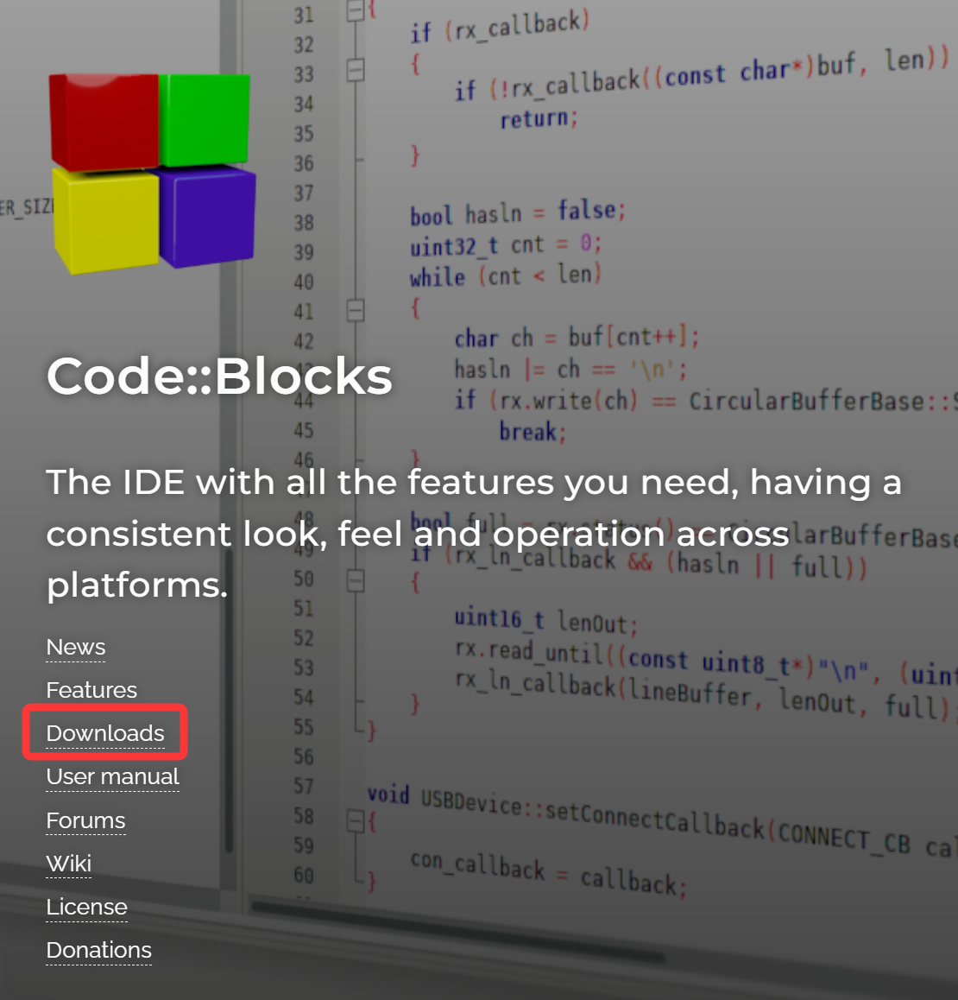
关键操作
在下载页面选择 codeblocks-XX.XXmingw-setup.exe（带 mingw 的版本）。名称中带有 mingw 表示安装包已内置编译器，安装后可直接编译 C 程序。不要下载不带 mingw 的版本，否则需要单独安装编译器，配置复杂。
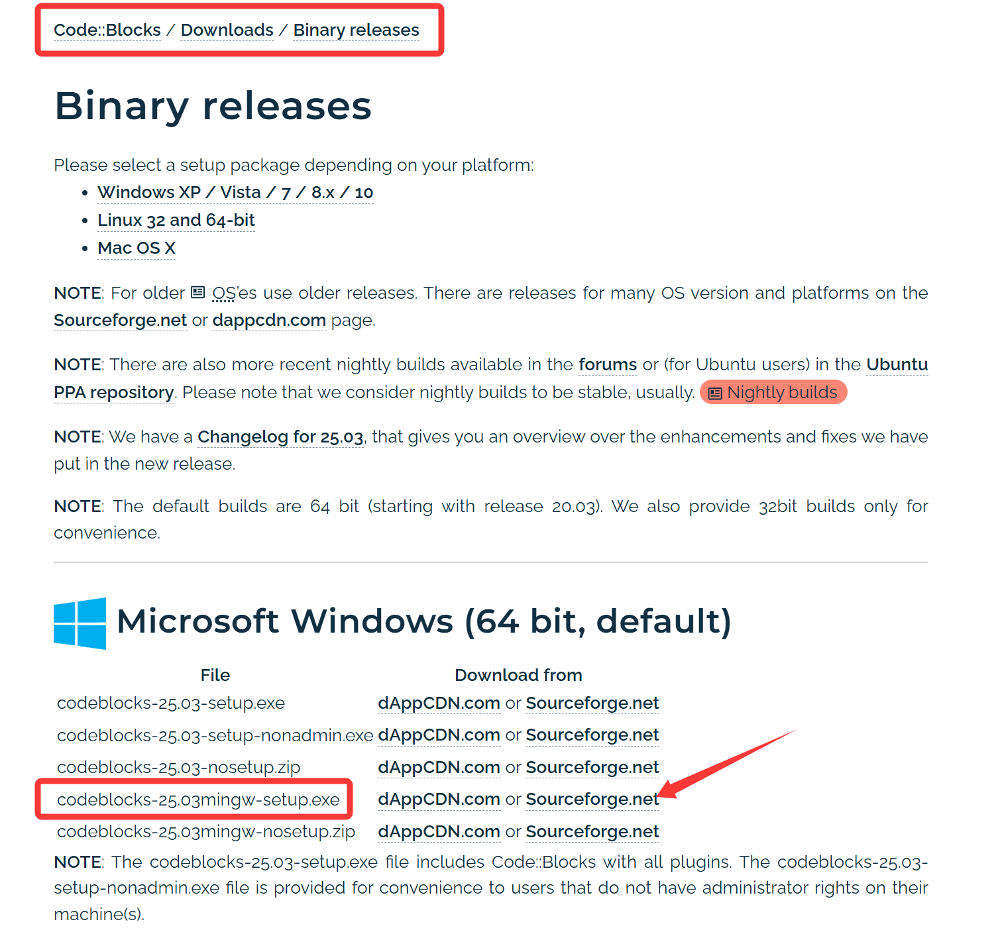
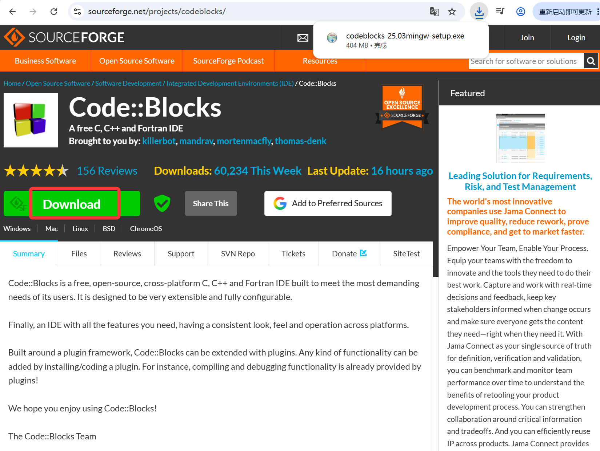
三、安装步骤
双击下载的 .exe 文件，进入安装程序，点击 Next。
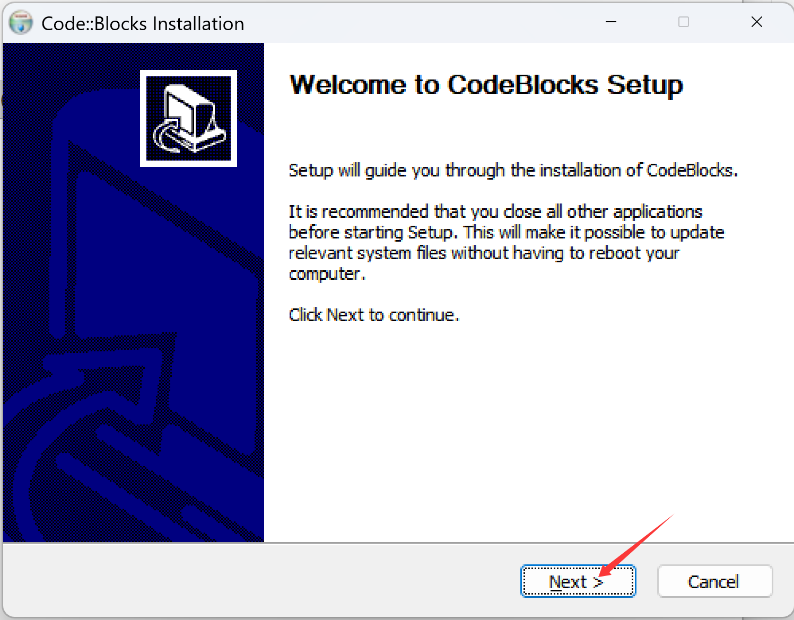
阅读许可协议后，点击 I Agree。
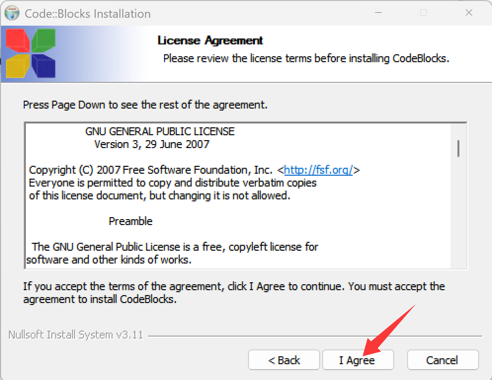
安装程序默认选择 Full（全部安装），直接点击 Next 即可。
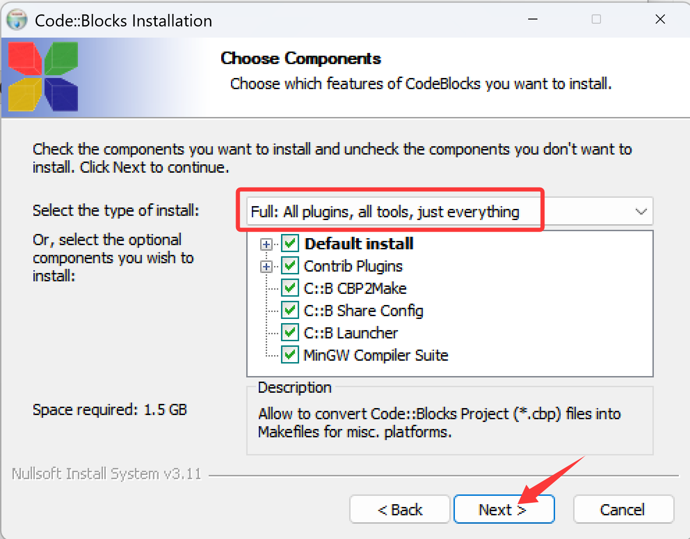
选择安装位置。注意：路径中不要包含中文或空格，建议安装在 D:\CodeBlocks 或 C:\CodeBlocks 等简洁路径下。点击 Install 开始安装。
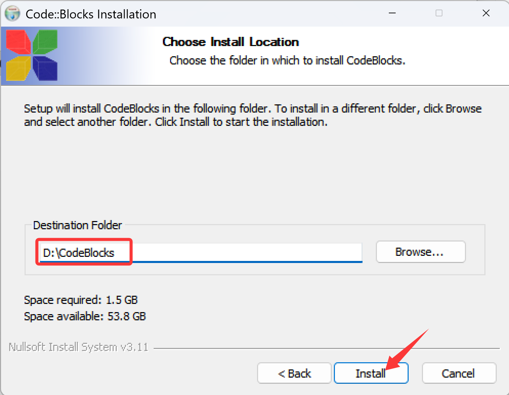
安装过程约 1–2 分钟，耐心等待。安装完成后点击 Next，再点击 Finish。
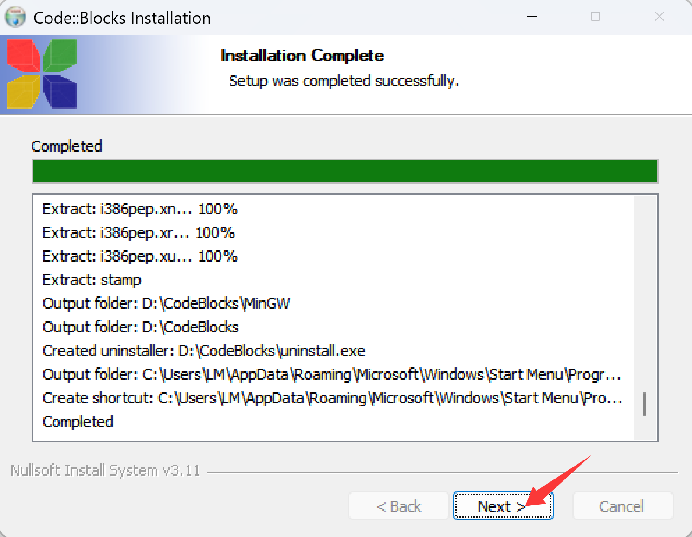
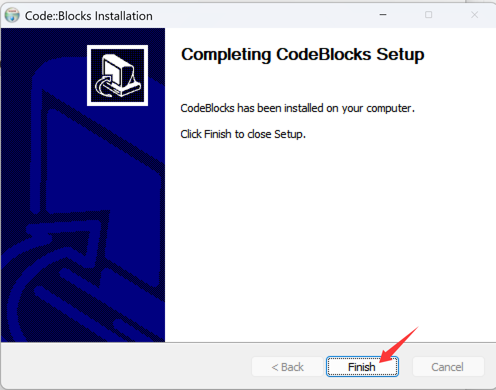
打开「开始 → 所有程序」，看到「CodeBlocks」文件夹即表示安装成功，桌面也会生成快捷方式图标。
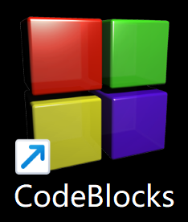
四、首次启动与配置
双击桌面 CodeBlocks 图标启动软件。
首次启动时，如果弹出编译器自动检测对话框，点击 OK 即可。
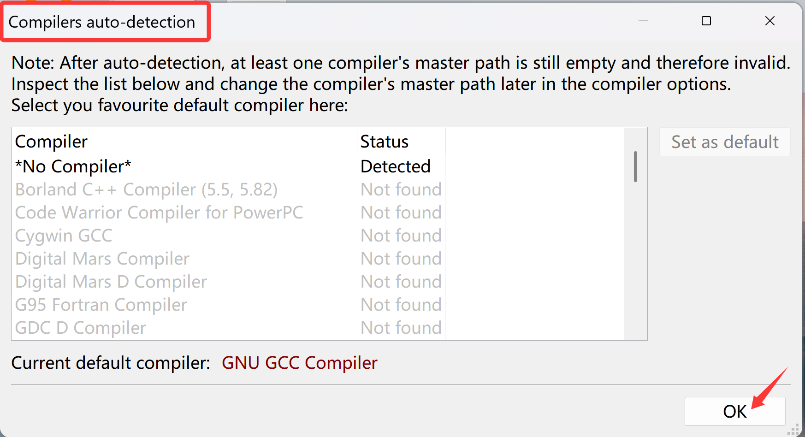
进入主界面后，进入 Settings → Compiler。确认「Selected compiler」为 GNU GCC Compiler。
如果未自动检测到，点击 Auto-detect 让软件自动查找。
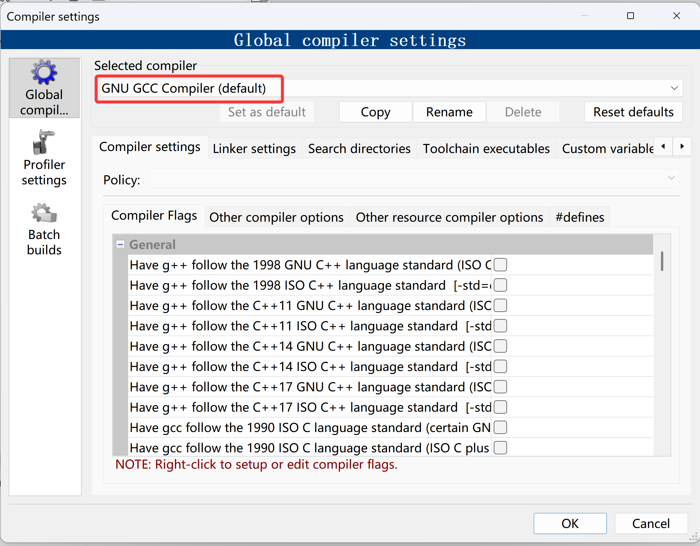
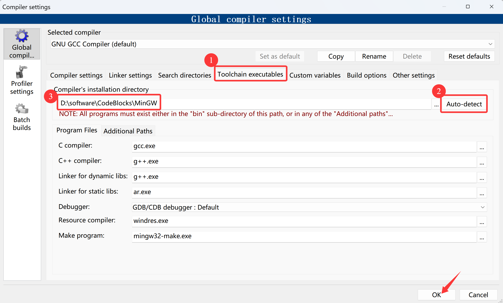